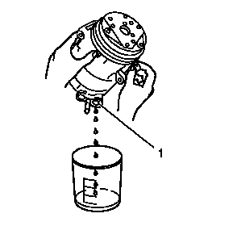

空调压缩机油平衡
排放程序

注意:
尽量排空已拆下的压缩机内的冷冻机油，并测量所排出的油量。
1.
从已拆下的压缩机的吸入口和排放口将油排放到放到一个干净的带刻度的容器中。转动压缩机轴，以便于排出压缩机中的油液。
2.
测量并记录从已拆下的压缩机中排出的油量。此测量值在安装更换的压缩机时会用到。
3.
检查从已拆下的压缩机中放出的机油。参见
空调压缩机油诊断
。
4.
正确报废已用过的冷冻机油。
平衡程序
注意:
在压缩机更换过程中，必须平衡空调系统中的冷冻机油。
注意:
注意检查更换的压缩机中的油量。
用于更换的压缩机中已带有部分加注的冷冻机油。必须根据以下情况对这部分机油进行平衡处理：
1.
参见压缩机拆卸和制冷剂回收过程中记录的冷冻机油。
2.
如果已知更换的压缩机中带有的冷冻机油容量。从拆下的压缩机上排出的油量以及制冷剂回收过程中取出的油量之和：
•
小于更换的压缩机中的油量。则排空更换的压缩机中的油量，向更换的压缩机中重新加注取出的机油总和（排放的机油+回收的机油）并安装更换的压缩机。
•
大于更换的压缩机的油量。则需要额外添加机油。从取出的机油总和（排放的机 油+ 回收的机油）中减去更换的压缩机中油量。由此得出的差值就是需要添加至更换的压缩机中的冷冻机油量。添加所需的额外机油并安装更换的压缩机。
3.
如果不知道更换的压缩机中带有的冷冻机油容量。则排空更换的压缩机中的油量，向更换的压缩机中重新加注取出的机油总和（排放的机油+回收的机油）并安装更换的压缩机。